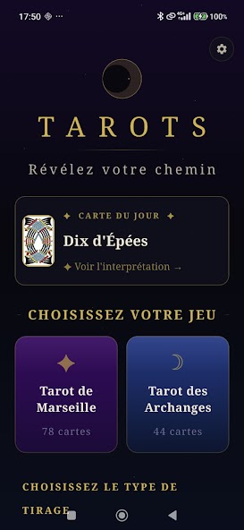
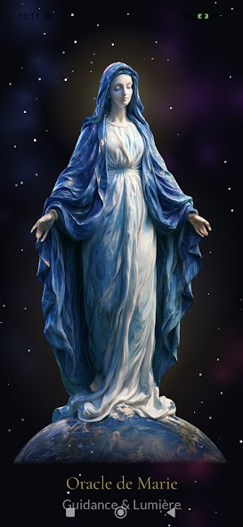
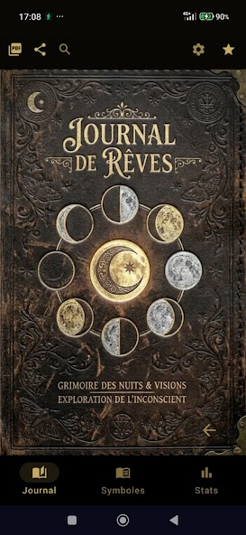
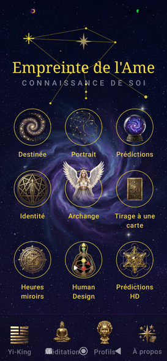
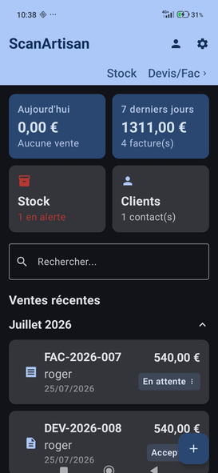

Cinq applications, dans l'ordre où elles sont nées
Certaines sont déjà entre vos mains, d'autres prennent encore forme. Toutes suivent la même règle : rien de superflu, rien d'intrusif.

Tarots
Tarot de Marseille & Tarot des Archanges, interprétation par IA
Deux jeux — le Tarot de Marseille (78 cartes) et le Tarot des Archanges et Anges Gardiens (44 cartes) — avec quatre types de tirages, dont la Croix Celtique. Chaque tirage peut être interprété par une intelligence artificielle qui tient compte de l'ensemble des cartes tirées. Journal de tirages, bibliothèque de 122 cartes, rappel quotidien.
10 lectures IA gratuites, puis abonnement Premium
Voir sur Google Play ↗

Oracle de Marie
33 cartes, une présence mariale au quotidien
Un tirage quotidien parmi 33 cartes inspirées de la Vierge Marie, selon le thème de votre choix — spiritualité, amour, travail, santé, famille. Tirage en trois cartes Corps/Âme/Esprit pour les questions plus profondes, 14 prières avec minuteur de méditation, 60 citations de sagesse, journal spirituel. Entièrement gratuite, sans publicité, fonctionne hors-ligne.
Gratuite, sans publicité
Voir sur Google Play ↗

Rêves — Interprétation
Comprendre le langage de vos rêves
Un journal pour noter vos rêves au réveil, avec une interprétation personnalisée générée par IA, un dictionnaire des symboles et des statistiques (humeurs, fréquence). Export PDF, dictée vocale, rappel quotidien.
10 rêves gratuits, puis abonnement Premium
Voir sur Google Play ↗
Empreinte de l'Âme
Connaissance de soi — numérologie, tarot, Yi-King, Human Design
Une application de connaissance de soi qui réunit plusieurs approches : numérologie, heures miroirs, archanges, tarot de naissance, Human Design, et un module Yi-King complet à la méthode traditionnelle des trois pièces, avec ses 64 hexagrammes.
Sera gratuite

ScanArtisan
Gestion de devis et factures pour artisans
Un outil de gestion pensé pour les artisans : devis, factures électroniques conformes à la norme Factur-X, profils clients, accessible depuis le téléphone comme depuis un ordinateur du même réseau local, avec sauvegarde automatique.
Sera avec abonnement
